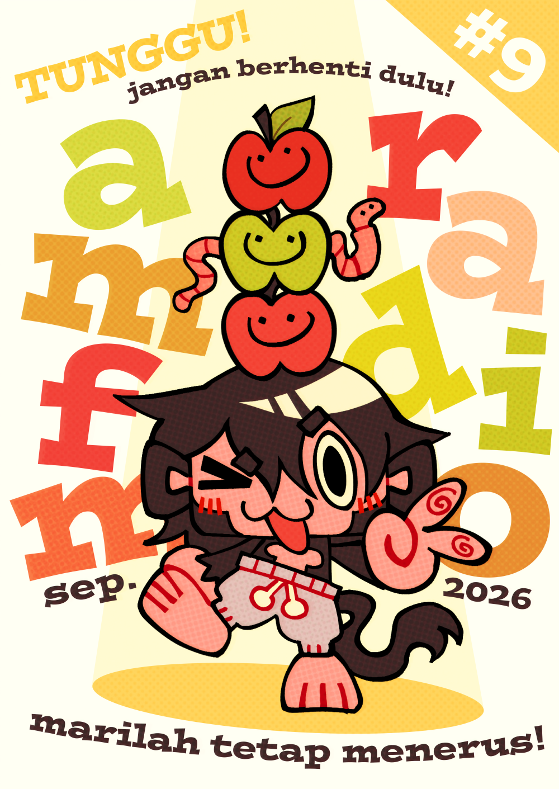
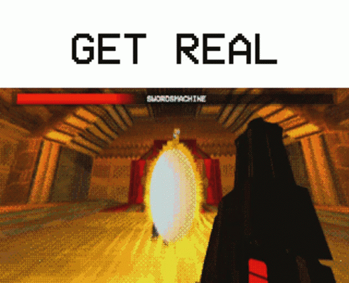
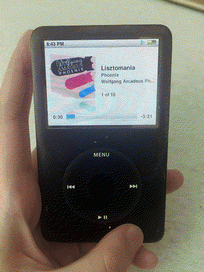
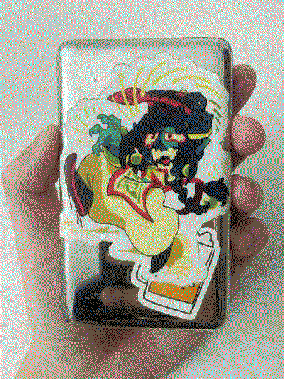
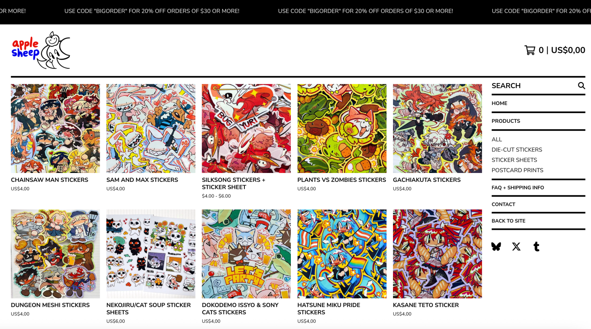

[2026/09/30]
September 2026

What’s good?
It feels like it’s been a while since I last properly wrote about anything interesting (anything NOT relating to work/stickers), so I think I’ll dedicate a section in each blog to talk about my hobbies. At my incredibly old, wrinkly, senile age (20s) it’s difficult to sit down and play video games for more than three consecutive hours without getting a headache, but I try anyway! A friend of mine recently bought me The Great Ace Attorney Chronicles because it was on sale, and I’ve been really enjoying it! I think a huge plus is that the controls are easy because it’s more or less a visual novel, so I don’t have to do the thing where I grind Ultrakill for almost twenty hours just to get used to the movement and tech. Though to be honest, the game itself is honestly really difficult to progress… I have to actually use my brain to deduce problems and analyze contradictions. It feels like a video game you play if you want to increase your IQ rather than to kick back and relax. I was recommended to play the Professor Layton games if I enjoyed TGAA (because TGAA is inspired by Layton), but seeing how the new Layton game is using Gen AI in its development, I think I’ll steer clear of the series, or just pirate the old games.
Speaking of Ultrakill, I’ve been playing a lot of that too! It’s ironic because I’m no good at games where you have to aim, move, and react fast. I usually don’t play any FPSs at all because of how dizzy and overwhelmed they make me. You’ll laugh at me for this, but I've been playing Ultrakill on lenient mode ever since I fell to my death about a hundred times in that one fake-out level in the Fraud Layer, and it makes it so much more bearable. I want to commend Hakita for how he handled implementing different difficulties in Ultrakill; rather than decreasing enemy damage, increasing your HP, and having the gameplay stay exactly the same regardless, he instead opts to lower the speed of the projectiles and the overall chaos just enough while keeping enemy damage and overall danger relatively the same. I found this to be extremely clever — it fixes a lot of accessibility issues while keeping the essence of the game the same. I’ve been enjoying the overall gameplay loop and lore a lot — no wonder this is one of the highest rated games on Steam! It’s up there as one of my favorite games of all time.

Hakita himself is also a really cool guy. I think he’s an extremely good game developer and his music is crazy good. I’ve listened to the Ultrakill OST and “Tennis, Everyone?” countless times. Hard to believe he got rejected from game/music college and made Ultrakill to spite that rejection (honestly, thank god he got rejected from college because of that, haha). He shares a lot of different kinds of art on his Twitter: music he listens to, films he watches, etc. I think that’s sick — sharing stuff you’re interested in and being genuine about it. I’m no game developer or music maker, but I want to be more like Hakita, in a way. I think he’s quite an enviable person.
Fun fact: Did you know that Toby Fox and Hakita included a nod to each other’s games in their own?
I almost forgot to share this: I revived an iPod this month! I feel like this thing is as old as I am. Many years ago, my family took it for themselves after finding it forgotten on a public table, and it’s been in our possession since. I yoinked it for myself of course, since I seem to be the only one who is willing to learn how to download and put songs onto it. I’ve actually been meaning to get an MP3 player for a while, but everything on the market today seems like a scam (either hundreds of US dollars, or cheaply and shittily made and will break in a few years, like all modern electronics seem to do). Even more popular models seem to come with various dealbreaking issues (too expensive, doesn’t offer gapless playback, clunky UI, etc…) Regardless, I got really sick of having to buy new earphone adapters constantly because they kept breaking wayyyy too easily in both my pockets and bag, so I gave up on taking advantage of an acquaintance’s Spotify family plan and decided to fix this old, indestructible device that should last me another few decades.


Sticker of my OC Yuehua by @droseattack :)
It’s an iPod 6th gen. Here’s my review: It does its job well. You need earphones/headphones to listen to the music, since it doesn’t have built-in speakers. No touch screen, which is great; I’m a huge fan of physical buttons, though the “physical button” on this thing is really just a smooth scrolling wheel, so it's more like a pseudo-touch screen. Huge storage; about 150GB on mine. Extremely long battery life, great if you’re the type of person who listens to music all day and refuses to buy new phones and now suffers from a leaky battery (my phone from high school is going to last me another decade whether it wants to or not). If you know what you’re doing, you can load any type of MP3 file into this thing, add custom lyrics, and sort it however you like; it’s great. I support bands I like by buying their albums on Bandcamp so I can put them on my iPod. It’s a win-win situation for everyone! I’d say that if you’re a person who listens to music 24/7, treat yourself to an MP3 player. I hate my phone; it’s an evil device. I’m glad I can go on walks and listen to music now without needing to bring that evil thing along.
Okay, on to some actual work/sticker updates.
I am crazy busy this month. One thing eating up my time is that I’m fed up with paying hundreds of dollars a month in Etsy fees, so I’m in the process of making a shop mirror in Big Cartel. It turns out that if you want to open a Big Cartel shop, you need to make a PayPal business account and a Stripe account, so that was another barrier to entry I had to figure out, as if having to figure out a new e-commerce platform isn’t enough of a hassle. Then come the issues of identity confirmation and taxes with this kind of stuff. Then, of course, I have to hit my quota of drawing and manufacturing new designs every month, so it's safe to say that there is a lot keeping me occupied.
Anyway, I opened a Big Cartel storefront! Please check it out!

I will say, I’m quite happy with what I’m doing. I think it’s a privilege to be tired from doing things you willingly want to do and get to work on. It also makes me feel less guilty about playing video games in my downtime because I get to think of it as a reward for my efforts... I spend hours a week dealing with shop stuff, and as much as I sigh about having to work, it always makes me glad to know that my stuff is well-liked and well-received. Lately, whenever I’m depressed or upset, I would pull up the hundreds of positive comments my art gets over different platforms. It’s a bit of a boost to my self-confidence. I’m still relevant! Thank god!
Things are picking up for me in real life. I’ve been asked/suggested/encouraged to go tabling at cons. Apparently my friend met a guy who makes more than six figures just selling art and merch at cons…? That’s crazy. It’s something I’ve put on my to-do list. Once I get my shit together more, I will definitely start tabling at cons, though I’m a little apprehensive about accommodation costs and travel. I hate planes. I’ve been a homebody for most of my life, and my line of work doesn’t exactly help… I should probably change that.
I feel absolutely vindicated by the steps I am taking in my “career” (flailing around until I find a method of earning money that works for me), not just because I am able to finally consistently make a profit off of drawing, but because my coworkers from my previous job (that I left due to abuse and exploitation) had told me they ALL left because the working environment nosedived ever since I quit.
Apparently, my previous workplace got flooded with rats a while after I decided the owner was a piece of shit and left, so I wasn’t there to witness it, thankfully! They’re saying there was LITERALLY rat shit in every nook and cranny. We had a rescue dog living in the shop, and he killed a rat every damn week. It wasn’t even that big of a place! They told me they constantly complained about the rat infestation to the owner, and he kept refusing to hire an exterminator anyway because that asshole said “he can just use ChatGPT to figure out how to deal with it himself.” He never did anything, of course. He kept ignoring his employees and not caring about their safety or the shop's condition for months on end. I’m not sure why he thought that losing all his employees and the possibility of having to take his dog to the vet was any cheaper than hiring an exterminator, but I think it was the result of brain damage from constantly complaining about his divorce that happened years ago, which he should’ve gotten over at this point. To be honest, I’d be surprised if his children even tolerate him anymore. We all have so many horrible things to say about him. He refuses to give anyone raises while piling on more and more job responsibilities on everyone; he was openly racist and misogynistic; he would even start insulting and yelling at employees near the tail end?? Wild shit.
See you in the next blog post :3